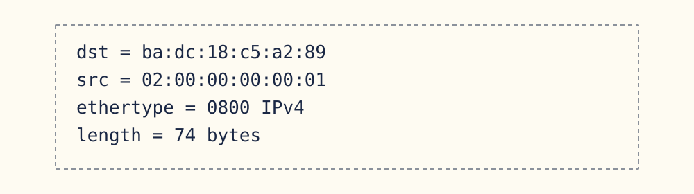
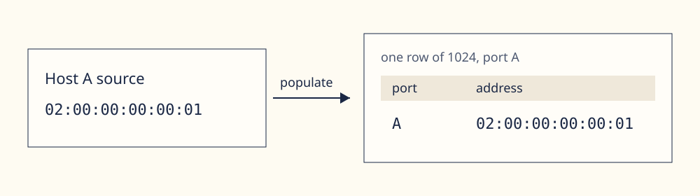
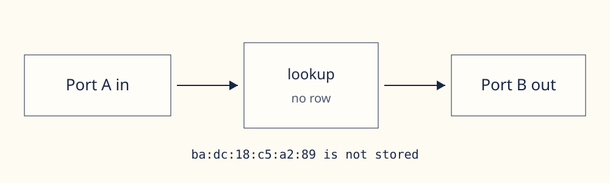
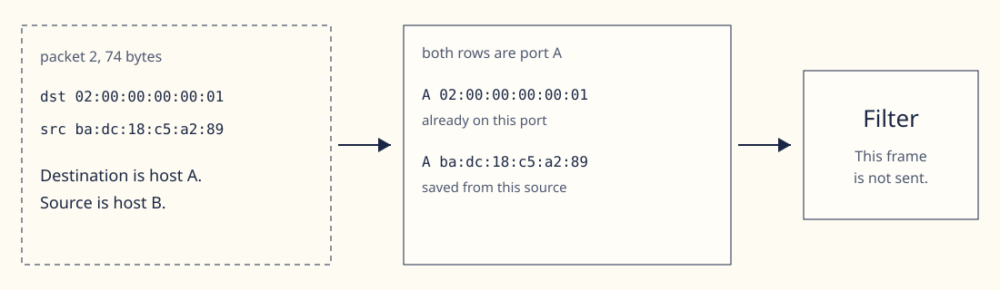
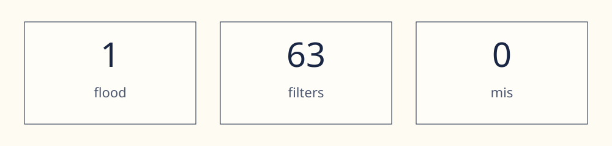
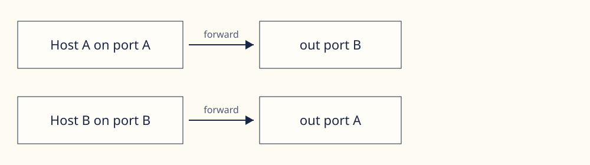

ns1_iperf.pcap · first 64 frames · port A
One capture, one step at a time
Both hosts in the file enter port A. The pictures below follow that run. Each one is a single fact from the log.
Packet 1
The first frame is 74 bytes of IPv4. The source is host A. The destination is host B.

The source is saved
A unicast source is written on the port that received it. After packet 1 the table holds one row: 02:00:00:00:00:01 on port A. The table has 1024 slots. This run fills one of them.

The destination is missing
ba:dc:18:c5:a2:89 is not a row. The lookup misses, so packet 1 is flooded out port B. Port B is the exit for this frame, not a second copy of the same input.

Packet 2 is the return frame
Learning uses the source. Sending uses the destination. The source is host B, so that address is saved on port A. The destination is host A, and host A is already on port A, the port this frame came in on. Port B is the only other exit, and host A is not there, so the frame is not sent.

The first 64 frames
One frame floods. The other 63 are filtered. Nothing is dropped, and nothing is forwarded. rx_a=64, tx_b=1, and mis=0. The C table prints the same counts.

[BR] rx_a=64 rx_b=0 tx_a=0 tx_b=1 flood=1 fwd=0 filter=63 drop=0 byte_mis=0 mis=0Split is a different run
Host A still enters port A. Host B enters port B. Packet 1 still floods, because host B is not installed yet. The other 63 frames are forwarded, not filtered.

What this run does not do
A beat counts only when tvalid and tready are both high. A frame under 12 bytes or over 2048 is dropped, and nothing is learned. Aging is off, so the new entry stays. A frame is forwarded only when its destination is already known on the other port. STP, LAG, and QinQ stay out.